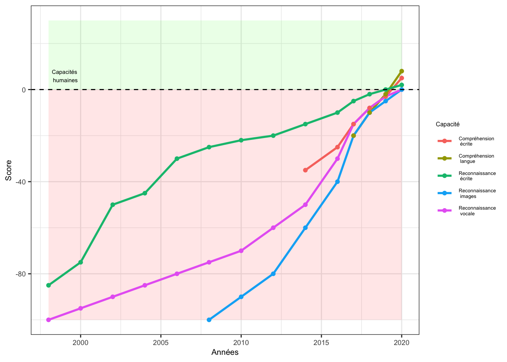

9 Outils d’intelligence artificielle
Jozef Rivest (University of Michigan)
Laurence-Olivier M. Foisy (Université Laval)
Hubert Cadieux (Université Laval)

Avec l’arrivée de l’intelligence artificielle, les questions suivantes se posent : pourquoi un livre d’outils numériques à l’ère de l’intelligence artificielle (IA) ? Que devient le chercheur ? Bien évidemment, ces deux questions ne sont que la pointe de l’iceberg, mais dans le contexte de ce livre, elles apparaissent centrales.
Ce chapitre vise à initier les lecteurs à ce qu’est l’IA, aux enjeux qu’elle engendre ainsi qu’à son potentiel pour les sciences sociales. Puisque l’IA est en évolution constante, présenter des outils comme le font les chapitres précédents ne serait pas d’une grande utilité. Entre l’écriture de ce chapitre et sa lecture, les outils présentés auront sûrement beaucoup changé. Par conséquent, l’approche de ce chapitre vise à fournir des clés de compréhension ainsi qu’à aiguiser le regard critique des lecteurs afin qu’ils puissent comprendre les bases du fonctionnement des modèles de langage (LLM) et développer un regard critique sur leur propre utilisation de ces outils. Se poser des questions et tenter de trouver des réponses ne peut que générer des bénéfices. Ainsi, si ce chapitre permet d’éclairer certains enjeux, ou s’il stimule davantage de questionnement, alors il aura réussi son objectif.
L’IA nécessite une certaine réflexion afin d’en faire une utilisation responsable et éthique. Comme les lecteurs l’auront remarqué, ce livre souhaite offrir des outils et des techniques afin que les lecteurs puissent optimiser leur espace et leur flux de travail. Mais que veut dire l’optimisation au juste ? Que cherche-t-on à optimiser ? En résumé, la réponse offerte par ce livre est d’optimiser son temps et son apprentissage. Dans cette quête d’optimisation, l’IA apparaît comme un outil qui offre des avantages intéressants. Effectivement, elle peut accomplir des tâches à une vitesse remarquable ! Cependant, sommes-nous réellement en train d’optimiser notre apprentissage ? La réponse à cette question est quelque peu complexe : ça dépend. L’IA peut effectivement nous aider à optimiser notre temps, mais elle peut aussi être détrimentale pour notre apprentissage.
Cet enjeu d’optimisation touche aussi à la seconde question qui est posée en début de chapitre à propos du futur du chercheur. Comme il en sera discuté plus tard dans ce chapitre, utiliser l’IA pour accomplir des tâches nouvelles, comme écrire un script de code en entier dans un langage que l’on ne connaît pas, n’est clairement pas optimal. Non seulement c’est une opportunité manquée d’apprendre une nouvelle chose et de diversifier ses compétences en tant que chercheur, mais aussi pour deux autres raisons. La première, et la plus importante, est que le chercheur reste imputable de ce qu’il produit. Si des erreurs s’introduisent dans les résultats de sa recherche et si ces erreurs mènent à des décisions politiques ou sociales néfastes, ce ne sera pas l’IA qui sera blâmée, mais bien le chercheur. La seconde est que des études récentes démontrent que l’utilisation de l’IA pour accomplir des tâches peut mener à une dette cognitive (Kosmyna et al., 2025). Les apprentissages que nous ne faisons pas à un certain moment risquent fortement d’avoir des conséquences négatives sur notre capacité à en apprendre davantage et à nous développer dans le futur. Il ne faut pas oublier que l’apprentissage est fortement cumulatif. Par conséquent, si les bases ne sont jamais apprises, alors on aura beaucoup de difficultés à progresser. Cela étant dit, l’IA reste tout de même un outil formidable, mais qui nécessite une certaine réflexion afin d’en faire une utilisation informée, responsable et qui ne nuit pas à notre développement cognitif.
Ce chapitre est divisé en trois grandes sections. Dans un premier temps, certaines définitions seront présentées afin que les lecteurs puissent renforcer leurs intuitions à propos de l’IA et des grands modèles de langage. Le but sera notamment de distinguer certains concepts. Nous nous en tiendrons à une approche conceptuelle plutôt que formelle dans ce chapitre. Les détails mathématiques et statistiques ne seront pas présentés en détail. Pour les lecteurs qui souhaitent en savoir plus, nous vous dirigerons vers les ressources appropriées. À la fin de cette première section, les lecteurs auront une compréhension élémentaire du fonctionnement de ces modèles ainsi que de leurs limitations. Ensuite, une brève présentation de l’évolution de l’IA dans les dernières années sera introduite afin de mettre en contexte ses développements ainsi que l’évolution rapide de la performance de ces modèles. Dans un troisième temps, nous introduirons une réflexion quant à l’optimisation de son environnement de travail avec l’IA ainsi que sur les impacts importants qu’une utilisation irréfléchie peut amener. L’objectif sera surtout de mettre en garde les lecteurs contre la dette cognitive qui se cache derrière l’utilisation de l’IA pour accomplir des tâches à notre place. Finalement, nous terminerons le chapitre avec une réflexion à propos de la place du chercheur aujourd’hui à l’ère de l’IA.
9.1 Point d’observation : qu’est-ce que l’intelligence artificielle ?
9.1.1 Définition et différents types d’IA
Qu’est-ce que l’IA ? Est-ce quelque chose d’homogène, ou s’agit-il plutôt « des intelligences artificielles » ? Dans un premier temps, il est important de préciser que l’IA est un champ d’études (Devedzic, 2022). Par conséquent, il s’agit d’un ensemble d’objets, relativement vaste et en constante expansion, qui s’intéresse, à sa façon, à l’IA. Pour préciser ce propos, prenons l’exemple de la science politique. Malgré la formulation au singulier, la science politique est un grand ensemble de différents sous-champs d’études, qui ont chacun leur propre objet d’intérêt. La philosophie politique, les relations internationales, la politique comparée et l’étude de l’opinion publique, par exemple, sont tous des sous-champs qui s’intéressent, à leur façon, au phénomène politique. Dans le même sens, et compte tenu de cette pluralité de perspectives, il est important de noter qu’il n’y a pas de consensus sur la définition de l’IA (König et al., 2022; P. Wang, 2019). De plus, la rapidité du développement de ce champ rend le traçage de frontières définitionnelles plutôt difficile : comment définir, d’une manière précise et consensuelle, quelque chose qui évolue constamment (Bertolini, 2020, p. 15; Devedzic, 2022) ?
Deux définitions de l’IA peuvent tout de même être retenues. La première vient de John McCarthy (2007, p. 2) : « Il s’agit de la science et de l’ingénierie qui consistent à créer des machines intelligentes1, en particulier des programmes informatiques intelligents. Elle est liée à la tâche similaire consistant à utiliser des ordinateurs pour comprendre l’intelligence humaine, mais l’IA ne doit pas se limiter aux méthodes qui sont biologiquement observables. »2. La seconde définition provient de la compagnie IBM (2023a) : « Dans sa forme la plus simple, l’IA est un domaine qui combine l’informatique et des ensembles de données robustes pour permettre la résolution de problèmes. Elle englobe également les sous-domaines de l’apprentissage automatique et de l’apprentissage profond, qui sont souvent mentionnés en conjonction avec l’IA. Ces disciplines sont composées d’algorithmes d’IA qui cherchent à créer des systèmes experts qui font des prédictions ou des classifications basées sur des données d’entrée ». Ces extraits permettent de comprendre que l’IA consiste à reproduire artificiellement certaines capacités cognitives humaines, afin de rendre les machines « intelligentes » en leur donnant la capacité de résoudre des problèmes par elles-mêmes.
Ces définitions restent toutefois à préciser, notamment dans le champ d’application de l’IA : qu’en est-il concrètement ? Comment est-ce utilisé ? Comment ça fonctionne ? Si l’IA se distingue en plusieurs types, en faire la liste et identifier leurs différentes branches et applications possibles serait fastidieux et s’écarterait de l’objectif de ce chapitre introductif. Cependant, pour ceux désirant en savoir plus sur le sujet, les articles de McCarthy (2007) et de Wang et al. (2023), ainsi que le Cambridge Handbook of Artificial Intelligence (König et al., 2022) sont très riches et illustratifs.
Avant toute chose, il est important de distinguer l’IA générale (strong) de l’IA précise (narrow). La première, et la moins populaire en nombre de recherches et d’applications, cherche à développer une machine qui aurait les mêmes capacités cognitives que l’humain, non seulement en termes de résolution de problème, d’apprentissage et de planification, mais qui serait aussi dotée d’une conscience de soi (IBM, 2023a; König et al., 2022). La seconde est plus restrictive, se limitant à la réalisation d’un ou de plusieurs objectifs spécifiques. Trois notions reviennent par ailleurs dès qu’on parle du fonctionnement de l’IA, et elles s’emboîtent plutôt qu’elles ne se juxtaposent. L’apprentissage machine (machine learning) est le champ général. Les réseaux neuronaux artificiels (artificial neural networks) en sont une famille de modèles, et l’apprentissage profond (deep learning) désigne ces réseaux lorsqu’ils comptent plusieurs couches.
L’apprentissage machine :
« […] consiste à programmer des ordinateurs pour optimiser un critère de performance à l’aide de données d’exemple ou d’expériences passées. Nous avons un modèle défini jusqu’à certains paramètres, et l’apprentissage est l’exécution d’un programme informatique pour optimiser les paramètres du modèle à l’aide des données d’entraînement ou de l’expérience passée » (Alpaydin et Bach, 2014, p. 3).
Le but est d’entraîner le modèle afin qu’il puisse reconnaître des tendances, et qu’il puisse décrire et/ou faire des prédictions à partir de ces tendances (Alpaydin & Bach, 2014, p. 3). Il s’agit du champ le plus populaire dans la recherche faite sur l’IA, notamment parce qu’il constitue une base importante pour les autres recherches dans le domaine (Devedzic, 2022).
Les réseaux neuronaux artificiels sont des structures qui s’inspirent des neurones du cerveau humain : « Les réseaux neuronaux artificiels (RNA) sont constitués d’une couche de nœuds, contenant une couche d’entrée, une ou plusieurs couches cachées et une couche de sortie. Chaque nœud, ou neurone artificiel, se connecte à un autre et possède un poids et un seuil associés. Si la sortie d’un nœud individuel est supérieure à la valeur seuil spécifiée, ce nœud est activé et envoie des données à la couche suivante du réseau. Dans le cas contraire, aucune donnée n’est transmise à la couche suivante du réseau » (IBM, 2023b). Ainsi, le but est de reproduire les structures cognitives humaines, afin de permettre à l’IA d’accomplir des tâches plus complexes. L’une des principales utilités de cette famille de modèles est qu’elle permet d’augmenter la rapidité du classement de données. La reconnaissance vocale ou d’image, par exemple, ne prend que quelques minutes grâce à cela, contrairement à plusieurs heures, lorsque fait par des humains (IBM, 2023b).
L’apprentissage profond, enfin, « […] fait référence à un réseau neuronal composé de plus de trois couches […]. L’apprentissage en profondeur automatise une grande partie de l’extraction des caractéristiques, éliminant ainsi une partie de l’intervention humaine manuelle nécessaire et permettant l’utilisation d’ensembles de données plus importants. Il peut ingérer des données non structurées dans leur forme brute et déterminer automatiquement la hiérarchie des caractéristiques qui distinguent les différentes catégories de données les unes des autres, ne nécessitant pas d’intervention humaine. » (IBM, 2023a). Ainsi, l’apprentissage profond permet une certaine forme d’automatisation des tâches demandées à l’IA, en lui fournissant les capacités nécessaires d’apprendre par lui-même pour corriger et améliorer son fonctionnement.
L’apprentissage profond et les réseaux neuronaux sont au cœur des avancements récents de l’IA et des grands modèles de langage. Bien que l’article date un peu, LeCun et al. (2015) offrent un excellent tour d’horizon de l’apprentissage profond et comment cette méthode a permis de faire des avancements importants dans les dernières années. La description et l’explication du fonctionnement des réseaux neuronaux demanderait beaucoup d’espace, d’autant plus que c’est un sujet plutôt technique. En ce sens, une telle tâche tombe à l’extérieur des objectifs de ce livre. Pour les lecteurs qui souhaiteraient en savoir plus, les livres de James et al. (2021), Hastie et al. (2017) et de Goodfellow et al. (2016) sont d’excellentes ressources à consulter qui expliquent aussi les fondements mathématiques et statistiques derrière l’apprentissage profond.
Toutefois, il est important de mentionner quelques éléments à propos du fonctionnement de ces modèles statistiques. Tout d’abord, les modèles neuronaux ne produisent pas de nouvelles choses. Bien que cela puisse sembler contre-intuitif étant donné la capacité des LLM à générer du texte, des images et même des vidéos, ces productions ne sont pas « nouvelles » à proprement parler. Les réseaux neuronaux identifient des régularités statistiques. En d’autres mots, à partir de données d’entraînement, ils identifient des motifs d’association afin de faire des prédictions sur de nouvelles données. L’exemple suivant, qui provient d’IBM3, illustre très bien cette idée d’association et de prédiction. Disons que l’on souhaite développer un logiciel afin d’identifier des courriels frauduleux. On utiliserait un ensemble de données textuelles qui contiendrait un mélange de courriels frauduleux et non frauduleux. Le but est que ce logiciel puisse filtrer les messages frauduleux afin que les utilisateurs puissent en être informés. De plus, on souhaite que les messages non frauduleux ne soient pas filtrés puisqu’ils sont probablement importants pour les utilisateurs. À partir de ces données, un modèle par réseaux neuronaux serait entraîné afin de détecter des régularités, comme l’association entre certains mots et leur fréquence, qui permettent de classifier les courriels dans ces deux catégories avec un haut niveau de précision. Une fois que le modèle est bien calibré, il peut être utilisé pour prédire à l’aide de probabilités si un courriel futur est frauduleux. Le modèle ne comprend pas au même niveau qu’un être humain le contenu de ces courriels. Il est seulement capable de détecter des régularités et de faire une prédiction statistique sur la probabilité qu’un courriel soit frauduleux ou non. En ce sens, la capacité de ce modèle à générer de bonnes prédictions est hautement dépendante du nombre de données d’entraînement et de leur qualité. De mauvaises données, des données manquantes ou des données hautement biaisées ne produiront pas un modèle très utile. Au contraire, le modèle pourrait même être sous-optimal et mener à de très mauvaises prédictions. De plus, l’entraînement du modèle se fait sur des données passées. Le modèle ne peut pas apprendre le futur, et peut aussi être relativement mauvais pour faire des prédictions s’il n’est pas mis à jour régulièrement en le réajustant avec de nouvelles données. Un grand modèle de langage repose sur le même principe, à ceci près que la prédiction porte sur le mot suivant. À partir du texte qui précède, le modèle choisit la suite la plus probable. Rien dans ce calcul ne vérifie l’exactitude du résultat, ce qui explique qu’un modèle puisse produire une référence bibliographique qui n’existe pas.
9.1.2 L’évolution constante de l’IA
Plusieurs chercheurs ont lancé des avertissements sur le développement de l’IA, notamment à cause de la rapidité de son évolution. Dans un article paru dans The Economist, Bengio (2023) déclare qu’il prévoyait le développement d’une IA avec des capacités similaires à celles de l’humain d’ici quelques décennies, peut-être un siècle. Depuis l’arrivée de ChatGPT-4, celui-ci a revu sa prédiction pour la situer entre quelques années et quelques décennies (Bengio, 2023). Dans les dix dernières années seulement, les systèmes de reconnaissance d’images et de langages en sont venus à dépasser les capacités humaines (Roser, 2022). La Figure 9.1 présente cette évolution4.
Comme on le remarque, cette évolution ne suit pas une trajectoire linéaire. Depuis 2015, la plupart de ces technologies ont évolué de manière quasi exponentielle. Cette progression fulgurante nous permet de faire quelques constats pour appréhender l’évolution future. Tout d’abord, le développement dans les capacités de l’IA permet d’accélérer de manière exponentielle le champ dans son ensemble, ce qui rend cette technologie exponentiellement plus puissante (Harari, 2023). Grâce à ses capacités de traitement de données et d’amélioration automatique, l’IA évolue plus vite qu’elle ne le ferait si elle dépendait uniquement de l’humain.
En tant que chercheur en sciences sociales, pourquoi devrait-on être préoccupé par le développement de l’IA ? Tout d’abord, il est important de commencer à réfléchir ainsi qu’à analyser les différents impacts que l’IA a sur nos sociétés. Les avancées dans le domaine en plus de l’accessibilité à ces technologies en font de nouveaux objets d’étude qui génèrent beaucoup de questions. Harari (2023) explique dans un article que la capacité de l’IA à manipuler ainsi qu’à générer du langage en fait un outil puissant qui a le potentiel d’avoir de profonds impacts sur nos civilisations. Par conséquent, l’étude des effets de l’IA sur nos sociétés devient un nouveau sujet de recherche sur lequel tous les champs des sciences sociales ont intérêt à se pencher. Présentement, il est anticipé que cette technologie puisse être utilisée pour « produire et diffuser des informations erronées et toxiques, éroder la confiance sociale et la démocratie ; surveiller, manipuler et soumettre les citoyens, en sapant les libertés individuelles et collectives ; ou créer des armes numériques ou physiques puissantes qui menacent la vie humaine » (Bremmer & Suleyman, 2023, p. 32). Compte tenu des conséquences potentielles que ces technologies peuvent avoir sur le monde social, tous les domaines scientifiques ont un fort incitatif à décloisonner leur savoir et leurs analyses, en plus de maximiser l’interdisciplinarité et la recherche collaborative. Une compréhension plus complète de ces changements ainsi qu’une communication de ce savoir ne pourra que générer des bénéfices pour le monde académique, social et politique.
9.2 Arpentage et choix éditorial : l’IA à toutes les étapes de la recherche, guide pratique pour une utilisation informée de l’IA
Dans le premier chapitre de ce livre, les auteurs ont proposé d’aborder la recherche selon une certaine temporalité : avant, pendant et après. Les chapitres qui ont suivi ont tous introduit des outils numériques qui s’insèrent dans une ou plusieurs étapes de cette temporalité. L’IA est probablement l’outil le plus transversal : elle s’insère dans chacune de ces étapes. De plus, plusieurs des outils présentés précédemment ont incorporé certaines fonctionnalités d’IA. Par exemple, les interfaces de programmation comme VS Code offrent l’intégration de plusieurs modèles d’IA au sein de leur interface.
Cette accessibilité grandissante et l’intégration facile de plusieurs modèles différents offrent d’importants avantages. Il est notamment plus facile d’utiliser des modèles d’IA afin de régler des problèmes de programmation, c’est-à-dire faire du débogage (debugging). Sans aucun doute, il s’agit d’une fonctionnalité très utile pour la recherche, qui aide à repérer les erreurs et les problèmes lorsqu’on en rencontre.
Toutefois, il faut faire preuve d’une certaine prudence. Cette section du chapitre souhaite encourager les lecteurs à ne pas devenir dépendants de l’IA. L’accessibilité grandissante de cet outil peut nous mener à une utilisation constante de l’IA pour achever les différentes tâches nécessaires dans le processus de la recherche. Une telle utilisation comporte plusieurs problèmes qu’il est important d’identifier et dont il faut rester conscient. Autrement, ce sont nos capacités cognitives et réflexives qui en paieront le prix, mais aussi notre profession de chercheur qui en sera transformée.
Dans cette sous-section, nous souhaitons présenter pourquoi l’IA devrait être utilisée pour peaufiner des tâches que l’on est déjà capable de faire soi-même, et non pas des tâches que l’on ne saurait pas réaliser seul.
9.2.1 Dette cognitive
Le concept de dette cognitive est présenté par Kosmyna et al. (2025). Dans leur recherche, ils étudient comment l’activité cérébrale est affectée par l’utilisation d’un moteur de recherche ou d’un LLM. Comparativement aux participants qui n’avaient accès à aucun support externe afin d’écrire leur texte, et qui sont d’ailleurs le groupe ayant la plus forte activité cérébrale et la plus complète, le groupe qui devait accomplir la même tâche à l’aide d’un LLM avait une réduction de près de 55% de leur activité cérébrale. Le groupe qui avait accès à un moteur de recherche se situe entre les deux avec une diminution de 34% d’activité cérébrale, mais où celle-ci était surtout concentrée dans les cortices visuel et occipital. En comparaison, le groupe ayant accès à un LLM avait la plus faible activité cérébrale, et ce pour l’ensemble du cerveau. Leurs résultats montrent aussi que l’utilisation d’un support externe, et notamment l’utilisation d’un LLM, affecte négativement la consolidation de la mémoire, l’efficacité de l’autosurveillance ainsi que le degré d’agentivité perçu dans la réalisation de la tâche (Kosmyna et al., 2025, p. 147). Dans la discussion de leurs résultats, les auteurs sont préoccupés par une conséquence importante de l’IA sur l’éducation : « […] bien qu’utile pour soutenir la performance, [les outils d’IA] pourraient involontairement nuire aux processus cognitifs, à la rétention et à l’engagement authentique avec les matériaux écrits. Si les utilisateurs sont trop dépendants des outils de l’IA, ils pourraient atteindre une fluidité de surface, mais échouer à internaliser le savoir ou à ressentir un sentiment de propriété. » (Kosmyna et al., 2025, p. 148, traduction des auteurs)
De plus, comme l’apprentissage est un processus qui est fortement cumulatif, il est important de comprendre que si l’on souhaite développer et renforcer son jugement critique, de même que sa capacité à produire des recherches qui offrent des solutions à des problèmes, alors il est important de maîtriser son sujet d’étude. Cette maîtrise se construit dans le temps, et se renforce au travers d’un processus itératif, ce qui demande d’investir du temps. Évidemment, plus de temps n’est pas nécessairement synonyme d’une meilleure compréhension. Apprendre demande de s’investir activement, et de ne pas être simplement passif (Buçinca et al., 2021).
En ce sens, une utilisation optimale de l’IA aiderait dans la gestion du temps sans pour autant nuire à notre apprentissage. Ce qui semble maximiser cet idéal serait donc d’utiliser les outils de l’IA afin de peaufiner des tâches que nous avons déjà accomplies au préalable, et non pas pour accomplir des tâches que nous n’avons pas encore accomplies ou que nous ne savons pas faire par nous-mêmes.
9.2.2 Clés d’apprentissage
La sous-section précédente ne doit pas être comprise comme décourageant l’utilisation de l’IA. Au contraire, cet outil offre de puissantes solutions, et ne pas l’intégrer dans son environnement de travail serait une erreur. Mais cette intégration demande d’être réfléchie, pour ne pas nuire à son propre développement. Trois questions aident à s’y retrouver.
Suis-je capable de faire cette tâche par moi-même ? Si la réponse est non, l’IA ne devrait pas être la première ressource vers laquelle on se tourne. On devrait plutôt se saisir de cette occasion pour approfondir sa connaissance et ses capacités. L’IA est plus utile lorsque nous sommes déjà capables d’accomplir une tâche et que nous souhaitons en améliorer une partie.
Suis-je capable de juger ce que l’IA me rend ? Des études récentes démontrent que l’humain a tendance à être trop confiant dans les recommandations de l’IA et à prendre de mauvaises décisions (Jacobs et al., 2021). L’information générée par l’IA doit toujours être évaluée par le chercheur, et pour faire cette évaluation, il faut au préalable comprendre son domaine et y avoir une certaine expertise. L’apport de l’IA arrive donc après la connaissance, et non pas avant. Dans le prélude de ce livre, nous avançons que « […] l’IA amplifie un chercheur compétent. Elle ne remplace pas les fondations. Un chercheur qui ne maîtrise pas ses outils ne sera pas libéré par l’IA. Il en sera dépendant, sans pouvoir évaluer la qualité de ce qu’elle produit. »
Qu’est-ce que je perds à ne pas faire cette tâche moi-même ? La maîtrise d’un sujet se construit dans le temps et se renforce par un processus itératif, d’essais et d’erreurs. En déléguant une tâche à l’IA, on retire une de ces itérations. C’est cette perte que décrit la dette cognitive. L’apprentissage actif consiste en un engagement plus élevé avec la matière, par exemple expliquer le contenu d’un cours à un non-initié, construire des aide-mémoires, annoter ses lectures puis les résumer dans ses mots.5 Bien que cet effort puisse mener à l’impression d’avoir moins appris (Deslauriers et al., 2019), les études démontrent que ce sentiment est faux, et que les étudiants qui s’y engagent performent mieux aux examens et comprennent mieux la matière.
9.2.3 L’IA et la science
Pour quelles tâches devrait-on utiliser l’IA ? Est-ce pour produire quelque chose de nouveau, ou est-ce plutôt pour peaufiner ? La distinction ici est très importante. Produire, c’est demander à l’IA ce qu’on n’aurait pas su faire soi-même. Peaufiner, c’est lui demander d’améliorer ce qu’on a déjà fait. La différence ne tient pas à la taille de la tâche mais à la capacité de juger le résultat, qui suppose d’avoir fait le chemin une première fois. Dans un article paru dans la revue Science, plusieurs chercheurs se disent inquiets des conséquences de l’IA dans la production scientifique (Zhao, 2026). Ces chercheurs estiment que l’IA accélère le processus de la recherche sans nécessairement en améliorer le contenu. Elle tend à se concentrer sur les sujets les plus populaires, mais aussi à être plus hermétique entre les différentes littératures. C’est un enjeu majeur puisque selon certaines recherches, l’IA n’innove pas, mais tend plutôt à reproduire et complémenter des sujets qui sont déjà populaires et bien documentés (Hao et al., 2026). En ce sens, l’IA produit sur ce qu’elle connaît, plutôt que sur ce qu’elle ne connaît pas. Par ailleurs, Hao et al. (2026) observent une tendance à la convergence : les solutions proposées se ressemblent davantage entre elles que celles produites sans assistance. Ces travaux sont récents et portent sur les modèles disponibles au moment de leur écriture, ce qui invite à les lire comme un signal à surveiller plutôt que comme une propriété définitive de la technologie.
Un modèle est entraîné sur la littérature publiée, qui ne représente pas l’ensemble de la recherche menée. Les résultats nuls sont rarement publiés, les travaux qui ne sont pas en anglais sont sous-représentés, et une part importante des travaux reste derrière des murs payants ou dans la littérature grise. Le portrait qu’un modèle donne d’un champ est donc celui de sa portion visible, ce qu’on appelle un biais du survivant. Le Chapitre 5 signale le même risque pour la synthèse de la connaissance, où l’omission de la littérature grise peut fausser le portrait obtenu.
L’utilisation de l’IA pose aussi des défis importants dans la reproduction de la science. Les résultats de Brodeur et al. (2026) démontrent que l’IA sous-performe comparativement aux humains dans la détection d’erreurs dans les recherches et dans la reproduction des résultats scientifiques. Bien entendu, ces résultats changeront probablement dans les prochaines années. La capacité de l’IA a déjà beaucoup évolué depuis l’arrivée de ChatGPT en 2022. Malgré tout, il vaut mieux faire preuve de prudence puisque les résultats des recherches peuvent avoir des impacts importants sur les décisions politiques ainsi que sur l’avancement des connaissances.
Ces résultats soulignent l’importance de la prudence dont tous les chercheurs doivent faire preuve dans l’utilisation de l’intelligence artificielle. Selon ces auteurs, l’IA atteint ses meilleures performances lorsqu’elle complémente le travail du chercheur, et non pas lorsqu’elle remplace celui-ci. En ce sens, une utilisation complémentaire de l’IA s’impose, dans laquelle le chercheur reste au centre des décisions, de l’interprétation, du jugement et de la gestion des échecs complexes (Brodeur et al., 2026).
Cela étant dit, il ne faut pas croire non plus que l’IA n’a que des aspects néfastes pour la science et pour le chercheur. Les éléments ci-haut, et la mise en garde qui est faite, concernent la production même de savoir. Or, la production est un processus qui peut être réduit en plusieurs tâches, et c’est la base de ce livre. À chacune de ces tâches, l’IA peut être un outil fort utile pour nous aider à peaufiner certains éléments. Bien entendu, et comme nous l’avons mentionné plus tôt, le chercheur doit veiller à ne pas devenir dépendant de l’IA.
Dans les sous-sections suivantes, nous proposons des exemples d’utilisation de l’IA à chaque étape de la recherche qui nous apparaissent respecter le cadre d’optimisation dont il est question ici, et dans lequel le chercheur reste le principal agent dans la production, ainsi que des exemples de « bonnes » et de « mauvaises » utilisations suivant les limites de l’intégration de l’IA dans le processus de recherche.
9.2.3.1 Avant la recherche
Chaque recherche débute avec une idée que l’on souhaite explorer. Cette idée doit s’ancrer dans la littérature. Dans le Chapitre 5, les lecteurs ont été initiés à Zotero afin d’organiser leurs références bibliographiques. Zotero est un outil puissant qui sauve énormément de temps, d’autant plus qu’il permet de lire et d’annoter des fichiers PDF au sein même de l’application. Avant tout, il faut trouver des articles. Plusieurs moteurs de recherche spécialisés existent déjà, tels que Google Scholar, ou les services offerts par la plupart des bibliothèques universitaires. Certaines IA ont aussi été développées afin d’identifier des articles scientifiques, telles que Elicit, Consensus ou ResearchRabbit ; le Chapitre 5 y revient.
Une fois que plusieurs sources ont été identifiées, il faut les lire et les annoter. Rappelons-nous que le processus d’apprentissage demande un engagement actif. Ainsi, utiliser l’IA pour résumer et annoter des textes constitue un engagement passif et ne permet pas au chercheur de s’engager dans son projet de recherche. De plus, si le travail de compréhension et d’analyse critique, la première étape dans l’écriture d’un projet de recherche, n’est pas fait par le chercheur, il est fort probable que tout le reste du projet sera réalisé par l’IA. Il est donc important que le chercheur fasse cette première étape lui-même.
Toutefois, là où l’IA peut être utile, c’est dans le développement d’une structure pour la revue des écrits. Une fois que le chercheur a lu les textes qu’il avait identifiés et qu’il a produit un brouillon de l’organisation de la revue des écrits, il peut être utile d’échanger certaines idées à propos de celle-ci avec l’IA. Cela permet de recevoir une première vague de commentaires et d’aider dans l’organisation de ses pensées. Ici, il s’agit surtout de peaufiner son organisation. Cela étant dit, nous encourageons fortement les lecteurs à faire les tâches d’écriture et de lecture par eux-mêmes. L’utilisation de l’IA est équivalente à l’utilisation d’un réviseur. En d’autres termes, l’IA est utile pour recevoir des commentaires. Cela peut prendre la forme de demander une note sur 10 de notre brouillon, tout en spécifiant les contraintes et qu’il s’agit d’une version préliminaire. Après avoir reçu les commentaires, c’est le chercheur qui décide et qui fait les modifications, si nécessaire.
En résumé, avant la recherche :
- Mauvaise utilisation. Laisser l’IA lire et résumer les textes à la place du chercheur, ou lui faire écrire la revue des écrits. La conséquence est une dépendance pour le reste du projet et une difficulté persistante à analyser des textes scientifiques de manière critique, ce qui est une compétence de base du métier.
- Bonne utilisation. Lire les textes et les résumer dans ses mots, puis faire un premier jet de la structure de la revue des écrits et se servir de l’IA comme réviseure. La conséquence est une meilleure compréhension de son sujet et un regard critique plus sûr sur la littérature.
9.2.3.2 Pendant la recherche
Bien évidemment, l’utilité de l’IA au sein du processus de recherche est déjà populaire. Avec l’adoption des outils de l’apprentissage machine dans les sciences sociales et du text as data, l’IA et les LLM sont devenus très populaires dans les tâches de classification et d’analyse de documents (e.g. Benoit et al., 2026; Burnham et al., 2025; Heseltine & Clemm von Hohenberg, 2024; Ornstein et al., 2025; Törnberg, 2025). D’autres recherches plus récentes ont même utilisé l’IA dans des contextes d’expériences afin d’étudier comment les gens changent de croyances.
Par exemple, dans leur expérience, Velez & Liu (2025) demandent aux répondants d’un sondage de répondre à une question ouverte afin de mesurer le positionnement sur certains enjeux, où ces réponses étaient ensuite analysées par ChatGPT-3 dans le but de fournir des échelles personnalisées aux répondants. D’autres se sont aussi intéressés aux performances de l’IA à fournir de l’information précise ainsi qu’à classifier des phénomènes politiques (Foisy et al., 2026; M. Foisy et al., 2026). Ces exemples ne constituent qu’une partie des développements récents dans l’utilisation de l’IA dans les sciences sociales. Il y a encore beaucoup de tests et de recherche à propos des capacités de l’IA en tant qu’outil scientifique ou dans l’étude des biais contenus dans l’IA.
Ici, la frontière entre produire et peaufiner est un peu plus mince. Dans plusieurs des cas mentionnés ci-haut, l’IA est utilisée pour accompagner le chercheur afin de traiter une grande quantité de texte. C’est un apport important. La plupart des outils statistiques qui sont utilisés en sciences sociales, et surtout l’inférence statistique, reposent sur des propriétés dites asymptotiques. En d’autres termes, plus l’échantillon est grand, meilleurs sont les différents outils statistiques, et plus les inférences que nous tentons de faire seront « robustes ». Une des utilités de l’IA, au-delà d’être l’outil principal de notre recherche, est de nous aider dans l’écriture et dans la correction du code pour produire nos analyses. En effet, l’IA peut être fort utile pour identifier les erreurs et nous aider lorsqu’on rencontre un problème. Toutefois, l’IA ne doit pas se substituer complètement au chercheur dans l’écriture du code. Il reste important que le chercheur soit en mesure de vérifier, et par conséquent de lire, le code qui a été généré. L’IA peut faire des erreurs ! Malgré ces avancements, et ce que les recherches mentionnées ci-haut montrent, l’IA et les nouveaux outils méthodologiques ne remplacent pas l’humain, mais le complètent (Grimmer et al., 2022).
L’utilisation de l’IA pendant la recherche peut prendre des formes diverses, et il est donc difficile d’offrir des recommandations complètes et définitives sur une utilisation convenable de l’IA. Toutefois, il est possible de suggérer un certain cadre. Pour faire court, le chercheur doit rester au cœur du processus de recherche et des décisions qui sont prises. Sa compréhension du contexte qu’il étudie ainsi que son jugement sont les éléments qui permettront de faire en sorte que la science fournira des réponses qui feront progresser notre compréhension du monde social (Benoit, 2025). L’IA raisonne et fait des prédictions à partir des données passées. En ce sens, elle peut renforcer le statu quo plutôt que de questionner les postulats qui le maintiennent en place (Benoit, 2025).
En résumé, pendant la recherche :
- Mauvaise utilisation. Confier à l’IA l’entièreté des analyses, du code statistique jusqu’à l’interprétation des résultats. Le jugement du chercheur est alors complètement évacué, alors qu’il reste imputable de ce qui est produit.
- Bonne utilisation. Confier à l’IA le traitement de grands volumes de texte, par exemple le classement de documents selon une grille de codage, en faisant coder à la main une fraction du corpus, un dixième par exemple, pour mesurer l’accord entre l’humain et la machine et en tirer un score de fiabilité (kappa de Cohen, alpha de Krippendorff ou score F1). Le chercheur garde l’interprétation, la validation, et il est en mesure de répondre des résultats.
9.2.3.3 Après la recherche
Une fois la recherche faite, il est temps d’écrire et de diffuser nos résultats. Ici aussi, une utilisation « responsable » de l’IA s’inscrit dans un processus actif et non passif. Généralement, la tâche d’écriture est plus facile à la fin de la recherche, lorsque le chercheur maîtrise son sujet et est resté l’agent principal dans la conception du devis de recherche et dans la production des résultats. En ce sens, l’IA peut être utile afin de revoir, d’évaluer et de faire des suggestions sur ce que le chercheur a produit. Mais le chercheur doit rester au centre des décisions et évaluer si les recommandations faites par l’IA sont utiles et ne dérogent pas du propos et de l’argument qu’il souhaite faire.
En somme, cette sous-section souhaitait présenter certaines clés de réflexion aux lecteurs afin qu’ils puissent situer l’IA dans chacune des étapes de la recherche en fonction des enjeux d’apprentissage et de transparence dont il a été question plus tôt. Ce chapitre ne souhaite pas décourager les lecteurs d’utiliser l’IA, bien au contraire. Il est important de développer ses compétences dans l’utilisation de l’IA et de savoir comment écrire des prompts qui permettent de maximiser le retour des agents conversationnels, par exemple. Ce sont de nouvelles compétences qui doivent être développées et comprises par les chercheurs. Cependant, il est aussi très important de comprendre les limites et les enjeux derrière une utilisation qui mène à une dépendance envers l’IA, et de comprendre qu’au-delà des coûts personnels au niveau de l’apprentissage, il y a aussi des coûts collectifs dans la production d’une science plus transparente et qui ne fait pas seulement « remâcher » ce qui a été produit au préalable. Oui, l’IA est un outil puissant qui offre des capacités utiles pour la production scientifique, mais elle a aussi son coût et ses défis : elle peut nuire au processus scientifique, à l’avancement des connaissances et aux prises des décisions publiques.
9.3 En terminant
Avec l’avènement de l’IA, il est tout à fait raisonnable de se demander quelle est la place du chercheur aujourd’hui. L’avenir du chercheur est-il en danger ? Pourrait-on assister au développement des sciences sociales sans chercheur humain ? Si tel est le cas, est-ce que ça ne constituerait pas un paradoxe important ? Est-ce que la machine est mieux placée pour comprendre la réalité du monde social, ainsi que ses mécanismes, que l’humain ? D’une part, certains pensent que l’IA risque de générer des « laboratoires autonomes » (H. Wang et al., 2023, p. 55). Il n’est pas difficile d’imaginer un monde où tout le processus scientifique, de la conception jusqu’à la communication, serait fait par l’IA. Le chercheur perdrait ainsi sa profession, et se limiterait à n’être qu’une partie de l’auditoire vers qui les résultats sont présentés.
Bien que nous n’en soyons pas encore là, il est important de réfléchir aux différents enjeux qui se posent à l’aube d’une révolution technologique. Par exemple, étant donné que pour l’instant le processus qui mène de l’intrant vers le résultat d’une IA est plutôt opaque, comment peut-on s’assurer que la machine a pris toutes les précautions nécessaires pour respecter les différents enjeux éthiques ? De plus, quel est le niveau de confiance que nous pouvons avoir envers des résultats dont la production nous est largement inaccessible ?
Cette dernière question est une limite importante de l’IA en ce moment : nous avons un accès limité aux processus qui mènent de l’intrant à l’extrant. Mais l’opacité des IA existantes empêche d’évaluer correctement la validité de leur protocole scientifique. Or, l’une des caractéristiques fondamentales de la science est la reproductibilité des protocoles scientifiques (Bourgeois, 2021; King et al., 2021). Toutes les recherches doivent présenter, d’une manière très précise, comment les données ont été choisies, comment elles ont été collectées et comment elles ont été analysées. La transparence résume l’esprit de toute communication scientifique.
Ainsi, l’avènement de l’IA en recherche apporte des questions et des réflexions épistémologiques6 et méthodologiques7 importantes. Ces questions sont cruciales et doivent être abordées le plus rapidement possible. En tant que chercheurs, nous devons nous questionner sur l’utilisation de ces nouvelles technologies. Il faut être proactif et amorcer ces réflexions maintenant.
Le but principal de ce chapitre était d’amorcer la discussion à propos de la place de l’IA dans les sciences sociales. L’objectif de la discussion n’était pas de décourager les lecteurs d’utiliser l’IA. Au contraire, elle offre des fonctionnalités utiles. Les différents outils présentés dans ce livre en témoignent. Malgré cela, il est important de rappeler que l’IA possède aussi son lot de défis et d’enjeux. Ceux-ci appellent donc à la prudence ainsi qu’à une utilisation réfléchie de ces outils. Bien qu’elle offre de nombreux avantages, cette technologie ouvre beaucoup de raccourcis attirants qui pourraient potentiellement nuire à plusieurs de nos capacités intellectuelles et physiques (Grassini, 2023). Il y a aussi le risque d’en devenir dépendant (Park et al., 2023). En ce sens, il est important de trouver un équilibre entre les contraintes de temps ou de connaissances propres aux êtres humains, et les possibilités nouvelles offertes par l’IA. Il ne faut pas perdre de vue non plus qu’il est important de développer ses propres capacités réflexives. Se poser des questions sur notre utilisation personnelle de ces outils constitue, dès aujourd’hui, un élément fondamental de la recherche en sciences sociales numériques.
Intelligence étant défini de la façon suivante : « L’intelligence est la partie informatique de la capacité à atteindre des objectifs dans le monde. On trouve différents types et degrés d’intelligence chez l’homme, chez de nombreux animaux et chez certaines machines. » (McCarthy, 2007, p. 2)↩︎
Sauf mention contraire, les traductions ont été effectuées par le logiciel DeepL.↩︎
La page d’IBM consacrée aux réseaux neuronaux : https://www.ibm.com/think/topics/neural-networks.↩︎
Le graphique a été reproduit à partir des données et du graphique de Our World in Data : https://ourworldindata.org/grapher/test-scores-ai-capabilities-relative-human-performance?time=1998..2023&tab=line↩︎
Pour une courte liste d’apprentissage passif et l’équivalent actif, les lecteurs peuvent consulter cette page de l’université Johns Hopkins : https://academicsupport.jhu.edu/study-aids/active-versus-passive-learning/↩︎
L’épistémologie est l’une des branches de la philosophie des sciences qui s’intéresse au savoir et à la connaissance. De manière générale, et très simplifiée, l’une des questions fondamentales de l’épistémologie est de se demander ce qu’est un savoir scientifique.↩︎
La méthodologie est le champ de la philosophie des sciences qui s’intéresse à l’étude des méthodes scientifiques ou techniques.↩︎